Well, I know, it’s a few weeks ago, already when we had TechDays Switzerland in Basel. Finally now I was able to publish the material of the two sessions I delivered there:
- Designing and Implementing Claims-Based Security-Solutions with WIF
- Presentation for Download
- Code Samples for Download
- Video of my presentation - Understanding and using Windows Azure AppFabric
Will follow-up in a separate post on this session;)
In this post I’ll explain, what you need to do to run the Windows Identity Foundation samples I’ve created for TechDays. I’ll post a description on the Windows Azure AppFabric samples in a separate post!
You will notice, that for both sessions I used the same startup-example, a little shop-scenario that consists of two web applications (a shop front-end and a payment management front-end as well as a payment-backend implemented as WCF web service):
{kind=link}
During the session on Windows Identity Foundation I modified this starting-point to let a security-token-service do the authentication of users and the issuing of tickets for authorization. With that we implemented a single sign-on across the two web applications as well as a cleaner and more flexible way of authorization through claims:
{kind=link}
Below you find the necessary steps for setting up and running these demos on your machine. Please follow these steps exactly to make sure all the X.509-certificates as well as the database are setup correctly!
- Prerequisites
Before we start you should make sure to have all the pre-requisites installed:
- Visual Studio 2010 RTM (trial works, as well)
- SQL Server Express Edition
- Windows Identity Foundation SDK
- Windows Azure Tools for Visual Studio and the SDK v1.1
- Windows Azure AppFabric SDK v1.0 - Make sure you have an Application Pool called “ASP.NET v4.0” in your IIS 7.0
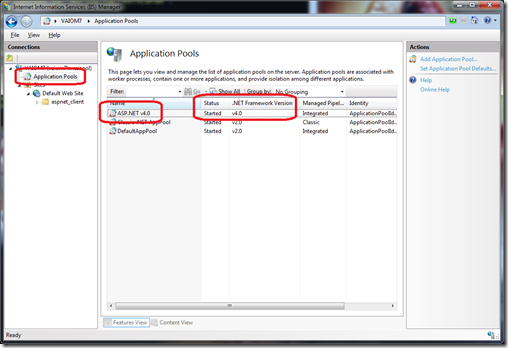 - Setup the databases and certificates for the secure web service
I’ve written a little script that installs the database and the certificates on your local machine. Just open a command prompt as administrator and execute the script SetupBasics.cmd to install these on your local machine. Please note, that this script installs the database on your SQL Server Express Edition Instance (local)\SQLEXPRESS. If you don’t have SQL Server Express Edition installed, then modify the SetupBasics.cmd-script to point to your own SQL Server instance!
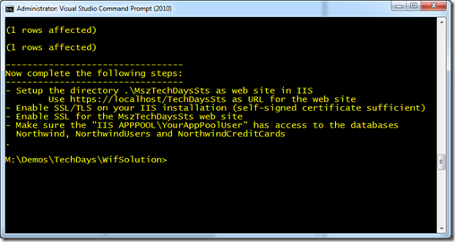 - Enable SSL on your IIS-instance
As the security-token-service for the WIF-based solution requires SSL, you need to make sure you have SSL enabled with a self-signed certificate on your local IIS. Follow these steps for doing so:
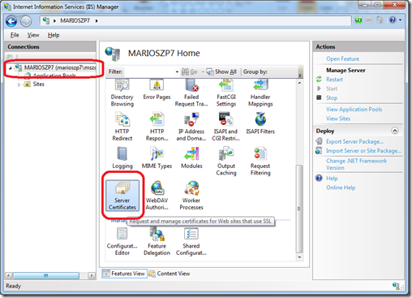
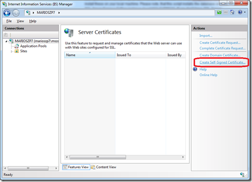 - Setup the STS-project as IIS application
In the sub-folder WifSolution of the downloaded ZIP-package with my samples, publish the directory .\WifSolution\MszTechDaysSts as IIS-application https://localhost/TechDaysSts – and don’t forget to enable SSL on this site!! This application needs to run in the ASP.NET v4.0 application pool (look at the screen shots).
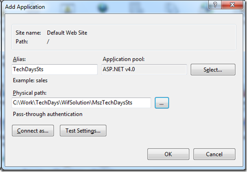
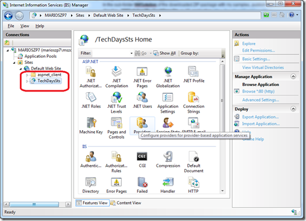
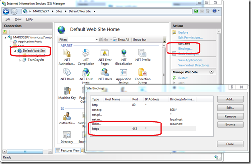
- If you get this error – set the permissions for IIS to access the files of the STS
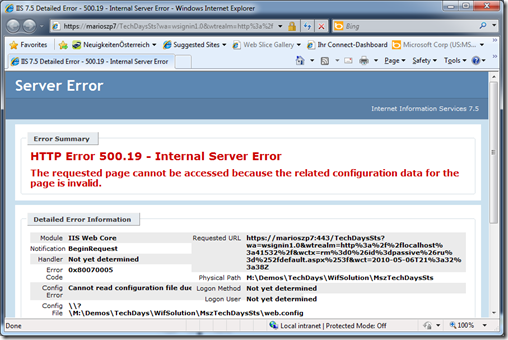
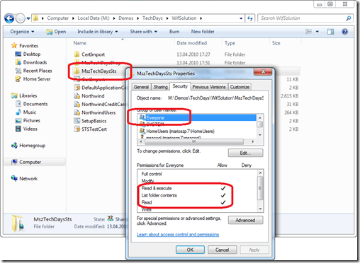
Simply add read access for everyone to the directory with the files containing the STS to make the app running.
- If you have installed IIS 7.0 AFTER Visual Studio 2010 / .NET Framework 4.0…
…you need to enable ASP.NET 4.0 on your web server by running “aspnet_regiis -i” in an elevated command prompt window. - Update <microsoft.identityModel> configuration in web.config
Next you need to open the web.config-file of the MszTechDaysShop and MszTechDaysShopAccount projects to update the URLs for your own Security-Token-Service. It should point to your local machine (local IIS) where you run the STS. Don’t forget to really use the machine-name instead of local host because the self-signed SSL certificate gets issued to the machine-name of your local dev-machine.
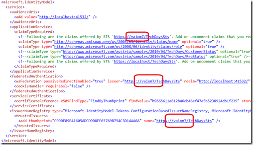 - Update the <system.serviceModel> sections in web.config
Next you need to update the system.serviceModel configuration in the web.config of the two web applications MszTechDaysShop and MszTechDaysShopAccount to point to the right STS for authenticating against the web service:
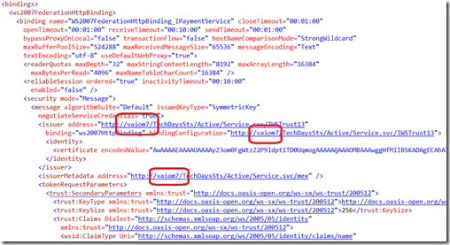
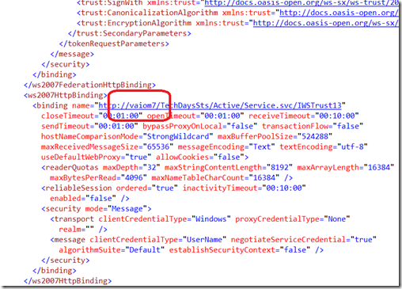 - Next open the solution “.\WifSolution\MszTechDaysShop\MszTechDaysShop.sln” in Visual Studio 2010 (run Visual Studio as Administrator)
After you’ve completed these steps you can run the demo through Visual Studio 2010. Don’t forget to run Visual Studio 2010 as Administrator if you want to debug the STS hosted in IIS. When running, make sure you first start the MszTechDays.Services.PaymentApp project and then start the others. Use the following credentials to sign in into the STS:
- user name = mszcool
- password = pass@word1
Or simply create your own credentials using ASP.NET WebAdmin when the STS-project is highlighted!
{kind=link}
{kind=link}
{kind=link}
{kind=link}
{kind=link}
{kind=link}
{kind=link}
{kind=link}
{kind=link}
{kind=link}
{kind=link}
{kind=link}